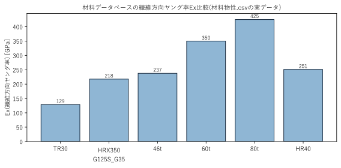

構造実装編 — 04_構造理論編.md のVBA実装¶
04_構造理論編.mdで説明した積層理論・3D梁FEM・強度評価の各要素が、実際のVBAコードのどこに対応するかをまとめます。各節の見出しは、コード側の' ●学習資料:アンカーコメントと対応しています。
1. 材料データベース¶
💻 対応コード:
Mod10_材料データベース.bas
積層計算(理論編§2)に使う材料物性(Ex, Ey, G, ν, 強度allowable5値)を、「材料データベース\材料物性.csv」から読み込み、材料名(またはシート上で使われている「材料コード」、GetMaterialPropsByCode経由)からルックアップできるようにするモジュールです。空力側の翼型データベース(Mod04_翼型データベース)と同じ「遅延読み込み+辞書キャッシュ」の設計を踏襲しています。

登録されている6種類の材料は繊維方向ヤング率Exが3倍近く異なります。桁のどの位置にどの材料を使うかは、剛性・強度・重量のトレードオフを踏まえたシート側の入力(積層構成)で決まります。
2. 積層構成のデータ表現とbreakpoint展開¶
💻 対応コード:
Mod11_桁断面剛性.basのFindSparRow/RampLookup
桁のマンドレル内径・積層構成(角度・厚さ・材料)・UD補強は、桁上のいくつかの代表点(breakpoint)でのみ値が与えられ、それ以外の位置はそこから展開して求めます。この展開には2種類あります。
- ステップ関数展開(
FindSparRow): 積層角度・厚さ・材料・UD構成は、代表点の値を「その代表点までの区間」にそのまま一定値として適用する。プライ構成は物理的に途中で連続変化しないため、線形補間ではなく階段状の展開が正しい。 - ランプ(線形)展開(
RampLookup): マンドレル内径は、区間ごとに「開始値→終了値」へ線形に変化する。桁の継ぎ目では段付きに一定、最終区間だけ滑らかにテーパーする設計になっている。
どちらも、代表点を先頭から順に処理して後の代表点が先の代表点を上書きする(同じ位置に複数の代表点が重なる場合は後の行が勝つ)という、元のMATLABコードのbunpu関数の仕様をそのまま再現しています。
3. CLT計算の実装(Q行列〜EIy〜Q16)¶
💻 対応コード:
Mod11_桁断面剛性.basのBuildSparSections(材料不変量u1〜u5からQ̄行列を求める箇所、A行列を組み立てる箇所、EIy3/Q16を円環積分する箇所)
理論編§2の材料不変量U1〜U5とQ̄行列の角度変換は、
u1 = 0.125 * (3 * qxx + 3 * qyy + 2 * qxy + 4 * qss)
...
q11(j) = u1 + u2 * Cos(2 * t) + u3 * Cos(4 * t)
q16(j) = u2 * 0.5 * Sin(2 * t) + u3 * Sin(4 * t)
にそのまま対応します(変数名はu1〜u5、q11〜q66と理論編の記号を踏襲しています。Q̄が繊維角度でどう変化するかの図は04_構造理論編.md§2、円環断面の層境界による積分イメージは同§4を参照)。理論編§3のA行列(厚み比重み付き平均)は、
Dim w As Double: w = thickMm(j) / ehMm
a11 = a11 + w * q11(j)
のループで組み立て、その逆行列成分からexEff(等価Ex)・gxyEff(等価Gxy)を求めます。理論編§4の円環積分によるEIy・Q16は、
eiy3 = eiy3 + (2 / 3 * q11(j)) * (z2(j) ^ 4 - z2(j - 1) ^ 4)
q16Coupling = q16Coupling + pi / 4 * q16(j) * (z2(j) ^ 4 - z2(j - 1) ^ 4)
に対応します(z2(j)が層境界の半径)。元のMATLABにはEIyの算出方式が複数用意されていますが、実際に使われているのはこの円環積分方式(analysis_type_EIy = 3)だけなので、他の方式はVBA化していません。
4. UD補強断面二次モーメントの実装¶
💻 対応コード:
Mod11_桁断面剛性.basのBuildSparSections(iyUD/izUDを計算するループ)
理論編§5の扇形断面二次モーメントは、UDの各層(パイプ外周に巻き足す1層ずつ)ごとに、開き角sita = widths(j) / rInを使って計算します。
sita = widths(j) / rIn
iyUD = iyUD + 0.25 * (rOut ^ 4 - rIn ^ 4) * 2 * (-Cos(pi / 2 + sita / 2) + Cos(pi / 2 - sita / 2) + ...)
UDの断面積(areaUD、自重計算用)・剛性への寄与(exUD * iyUDをEIyに加算)もこのブロックでまとめて計算し、clsSparSection(断面剛性の入れ物、要素ごとにEA/GK/EIy/EIz/Q16などをプロパティで保持)へ格納します。
5. 断面剛性計算の実行エントリポイント¶
💻 対応コード:
Mod13_桁断面剛性実行.bas
「パラメータ_桁」系シートの実データをMod11_桁断面剛性.BuildSparSectionsが期待する引数の形へ整え、呼び出すためのエントリポイントです。シート上のUD幅がミリメートル単位で入力されているのに対しBuildSparSectionsはメートル単位を前提としているため、ConvertUdWidthsToMetersで変換してから渡します(01_全体アーキテクチャ.mdの単位注意点を参照)。
6. 桁自重¶
💻 対応コード:
Mod14_桁自重.bas
パイプ・UDそれぞれの断面積(clsSparSection.Area/AreaUD)に材料密度(固定値1550kgf/m³)と要素長を掛けて各要素の重量を求め、隣接要素の平均を取って節点の自重荷重[N]に変換します(BuildSparWeightNodes)。この節点荷重は、Mod15_桁荷重が組み立てる荷重ベクトルのうち揚力方向(fy)から差し引かれます。
7. 荷重ベクトルの組み立てとグリッド橋渡し¶
💻 対応コード:
Mod15_桁荷重.basのSplineAeroToFem(グリッド橋渡し)、BuildSparForceVector(荷重ベクトル組み立て)
01_全体アーキテクチャ.mdで説明した「コサイン分布グリッド→等間隔グリッド」の橋渡しは、SplineAeroToFemが担当します。ユーザーが別途実装済みの3次自然スプライン関数SplineXY_Start1を使い、空力側の半スパン分布(揚力係数Cl_dist・形状抗力係数CdDisJohen・誘導抗力係数CdInd・モーメント係数CmDisJohen・桁位置KetaIti)をFEM側の等間隔グリッドへ変換します。
Dim splined As Variant: splined = SplineXY_Start1(yHalf, valHalf, element)
BuildSparForceVectorは、変換後の分布に動圧・面積分担(dsFemDis、翼弦長の台形則)を掛けて揚力・抗力・モーメントの節点荷重を求め、そこから桁自重(§6)・二次部材重量(リブ・外皮などの概算、wps係数×翼面積分布)を差し引いて、最終的な荷重ベクトル(節点ごとに[fy, fz, mx]、6自由度中3つ)を組み立てます。
fy = liftFem(i) * G_ACCEL - wSecondary - wNode(i) ' 揚力 - 二次部材重量 - 桁自重
桁位置(KetaIti)は空力側シートがパーセント表記(例: 35=35%)で保持しているため、/ 100#で分率化してから圧力中心Cp(0〜1)と揃えて使います。この単位を揃え忘れるとねじりモーメントが2桁ずれて暴走する、という実機テストで見つかった不具合があった箇所です(詳細は07_既知の制限事項.md)。
8. 3D梁FEMの組立・ブロックThomas法による求解¶
💻 対応コード:
Mod16_桁FEM.basのBuildElementBlocks(要素剛性行列)、SolveSparFEM(組立・求解)
理論編§6の6×6ブロック(b1〜b4)はBuildElementBlocksで組み立てます。EIy系列(v-θz平面)の項はc1〜c4、EIz系列(w-θy平面)の項はbigC1〜bigC4、GK(ねじり)はkG、Q16(曲げ-ねじり連成)はqL = q / Lとして、各ブロックの該当するマス目に配置しています。
理論編§7のブロックThomas法はSolveSparFEM内で、まず各要素のブロックを隣接要素同士で足し合わせてブロック三重対角行列(D=対角ブロック、U=上側、Lm=下側)を組み立て、
' ---- 前進消去 ----
Dp(ip) = Mat6Sub(D(ip), MMult(factor, U(ip - 1)))
...
' ---- 後退代入 ----
Xsol(ip) = MMult(MInverse(Dp(ip)), rhs)
という手順で解きます。VBAでReDimしただけのVariant配列は要素がEmpty(数値の0ではない)のままになり、これをMInverse/MMultに渡すとエラーになるため、ZeroMat6/ZeroVec6という明示的なゼロ初期化関数を必ず経由する点に注意してください(実際にこの問題で最初の実行時エラーが起きた箇所です)。
求解後、節点変位から要素ごとの断面内力(Cベクトル、b1・u_i + b2・u_(i+1)等)を計算し、揚力方向のBMD(曲げモーメント分布)・SFD(せん断力分布)、および強度評価(§9)で使う全断面内力(Fx/Fy/Fz/MxInt/MyInt/MzInt)をclsSparDeformationへ格納します。
9. 強度・座屈評価の実装¶
💻 対応コード:
Mod17_桁強度座屈.bas
理論編§8のTsai-Wu複合則はTsaiWuRatio(2次方程式a・R²+b・R=1を解く部分)、材料主軸への応力回転はRotateToMaterialAxesが担当します。EvaluateSparStrength本体では、FEMで求めた断面内力・変位差(ひずみ)から、断面周方向の各点・各層の応力を計算し、(周方向の評価点位置・破壊包絡線の図は04_構造理論編.md§8を参照)
ratio = TsaiWuRatio(sigmaX, sigmaY, sigmaS, stx(j), stxd(j), sty(j), styd(j), sts(j))
If ratio < minRatioPipe Then minRatioPipe = ratio
のように最小強度比を要素ごとに求めます(パイプは周方向4点、UDは2点)。
理論編§9の座屈4方式は、zakutu1〜zakutu4として計算されます。
zakutu1 = 4 * 2^0.5 / 9 * (yex1*yey1)^0.5 / (1 - rmux1^2*yey1/yex1) * laminateThickM / odI
zakutu3 = 4 * 2^0.5 / 9 * (exEff*eyEff)^0.5 / (1 - rmux1^2*eyEff/exEff) * laminateThickM / odI
yex1/yey1(パイプ最外層の実物性)とexEff/eyEff(§3のA行列由来の等価物性)、laminateThickM(パイプ厚のみ)とlaminateThickM + udTotalThickM(パイプ+UD厚)の組み合わせで4通りを計算し、実際の最大曲げ応力sig1Maxで割って安全率にしています。
10. 構造解析パイプライン全体のエントリポイント¶
💻 対応コード:
Mod18_桁構造解析実行.basのSolveSparFromAoa/RunSparSolve
01_全体アーキテクチャ.mdで説明した通り、SolveSparFromAoaが空力解析(Mod08)→断面剛性(Mod13→Mod11)→荷重ベクトル(Mod15)→FEM求解(Mod16)→強度評価(Mod17)を、シートの読み書きを介さずメモリ上のオブジェクトで一気通貫に実行する、構造解析側の唯一の入口です。RunSparSolveはこれを「パラメータ設定」シートの取付角で1回実行し、結果の抜粋をイミディエイトウィンドウへ出力する、目視確認用のラッパーです。
SolveSparFromAoaのelement引数(FEM要素数)はOptionalで既定値500ですが、RunSparSolveからはGet02_桁解析分割数(「パラメータ_桁」シートの「計算分割数」)の値を明示的に渡しています。空力側の分割数(Get01_翼解析分割数、§1参照)と同じく、シート側で分割数を調整できるようにするための対応です。
SolveSparFromAoaは空力解析結果(aeroResult)もByRefで返します。以前は内部で計算した後に呼び出し元へ返さず捨てていましたが、§11のCSV出力(lift_fem等の再構成)がこの値を必要とするため拡張しました。
11. 結果のCSV出力¶
💻 対応コード:
Mod21_桁結果CSV出力.bas、Mod22_桁構造解析スイープ実行.bas、Mod15_桁荷重.basのBuildFemAeroDist
元のMATLABプログラム(WING_FEM_IKI.m)は解析結果を6種類のCSVへ書き出していました。空力側(§10、Mod20_空力結果CSV出力)と同じOutputText/Mod19_出力共通の仕組みで、構造側も同等のCSVを再現しています。
| 元MATLABのファイル | VBA側の対応 | 出力設定(Enum) |
|---|---|---|
output_FEM_analyze_data.csv |
Mod21_桁結果CSV出力.WriteSparSingleCsv |
O06_output_FEM_analyze_datacsv |
output_BMDとか.csv |
WriteSparBmdCsv |
O05_output_BMDとかcsv |
output_基本積層応力.csv |
WriteSparPlyStressCsv |
O07_output_基本積層応力csv |
output_基本積層歪.csv |
WriteSparPlyStrainCsv |
O08_output_基本積層歪csv |
output_部分積層応力.csv |
WriteSparUdStressCsv |
O09_output_部分積層応力csv |
output_部分積層歪.csv |
WriteSparUdStrainCsv |
O10_output_部分積層歪csv |
output_ketasiken_date.csv |
WriteSparTestCsv |
O04_output_ketasiken_datacsv |
keta,aoa=X.csv(新規) |
Mod22_桁構造解析スイープ実行.RunSparSolveSweep |
O11_ketaaoa○○csv |
上記のうち単一実行分(表の上7行)はMod21_桁結果CSV出力.WriteAllSparCsvにまとめてあり、Mod18_桁構造解析実行.RunSparSolveの最後から1回呼ぶだけで全て出力されます。
出力フォルダと出力ファイルの選択¶
出力先フォルダはThisWorkbook.Path & "\output(機体名)\"(Mod19_出力共通.EnsureOutputFolder、機体名はGet01_機体名())です。機体名をフォルダ名に含めることで、複数機体の解析結果を混ぜずに残せます。
出力するファイルの取捨選択は、当初は文字列キー方式(ShouldOutput)で実装していましたが、「設定」シートに実データチェック機構(Sh01_設定の「出力チェック」列、Enum_O出力データ一式という専用Enumで11種類のCSVをO01〜O11として管理)がユーザー側で用意されたため、そちらのMod19_出力共通.GetOutputCSVSetting()(1 To 11のBoolean配列を返す)に一本化しました。各Write*CsvはoutputSetting引数でこの配列を受け取り、outputSetting(Enum_O出力データ一式.O0X_...)で判定します(呼び出し元で1回だけGetOutputCSVSettingを取得し、使い回します)。
グリッド橋渡しの再利用(BuildFemAeroDist)¶
§7で説明した「コサイン分布グリッド→FEM等間隔グリッド」のスプライン変換(SplineAeroToFem)は、元々BuildSparForceVector(荷重ベクトル組み立て)専用のPrivate関数でしたが、CSV出力側(lift_fem/Cd_ind_fem等の列)も同じ変換結果を必要とするため、Mod15_桁荷重.BuildFemAeroDist(Public)として1本化しました。BuildSparForceVectorはこの関数の戻り値から荷重ベクトルを組むだけになっており、計算式そのものは変更していません(挙動は従来と同じです)。あわせてSplineAeroToFemに変換種別6(誘導迎角)・7(有効迎角)を追加し、w_fem(downwash速度)・ae_fem(有効迎角)列の再構成に使っています。
lift_fem/drag_fem/pro_drag_fem/ind_drag_fem/MG_femは元MATLABがkgf系(重力加速度を掛けない)で出力しているため、BuildFemAeroDistの戻り値をそのままCSVへ出力しています(output_ketasiken_date.csvのfy等は元コードもN系のままなので、そちらはG_ACCELを掛けたまま)。同じ「力」に見える列でもファイルによって単位系が違う、という元コードの癖をそのまま踏襲している点に注意してください。
元コードの不具合は再現しない(3件)¶
空力側(§10)と同様、構造側でも以下は修正した値を出力します。
- 「最大応力/最大歪」列: 元コードは符号つきの単純
max()で、圧縮側(負の値)の真の最大を取りこぼすことがありました。ここでは絶対値の最大(max(abs()))に修正しています(Mod17_桁強度座屈.EvaluateSparStrengthのsig1MaxPipe/eps1MaxPipe等、絶対値比較へ変更済み)。 - ヘッダー/データの列ずれ: 元コードの
output_FEM_analyze_data.csvはヘッダー行とデータ列の対応にずれがある(ソース中に重複したカンマがある)既知の問題がありましたが、ここでは実データ49列に正しく1対1対応するヘッダーを出力します(ヘッダーの文言自体は元コードの表記に合わせてあるので、見た目には違和感がないはずです)。 output_BMDとか.csvの「径」列: 元コードは内径(diameter)をそのまま出力していますが、実データ突き合わせで確認するまでは「半径(radius)」と誤認しており、当初はこちらだけ値が半分になっていました。修正済みです。
プライ別・UD層別の生データ、sig1_beam/sig6_beam¶
output_基本/部分積層応力・歪.csvが必要とする「プライ(層)ごとの生の応力・歪」は、従来のclsSparStrength(要素ごとの最小Tsai-Wu比・座屈安全率だけを保持)には無かったため、SetPlyDetailsで拡張しました(§9のEvaluateSparStrengthのループ内、φ=270°(パイプ)/φ=270°(UD、2角度中の2番目)における生値を追加収集)。既存のTsaiWuPipe/TsaiWuUD/Buckling1〜4の計算・戻り値は変更していません。
output_FEM_analyze_data.csv/keta,aoa=X.csvのsig1_beam/sig6_beam(Tsai-Wu評価とは別系統の、梁理論の生の応力を表示する診断用列)は、clsSparStrengthに保持していないためMod21_桁結果CSV出力がdeformation/secから直接計算し直します。元MATLABのsig1_beam(i,elem_pipe_wing_new(i,2),4)という参照(=最外層プライ位置で評価)に合わせ、半径はMod17_桁強度座屈と同じ式(内径/2+1層目厚さ×積層厚さ係数×プライ数)で求め、sig6_beamはFy項・Fz項に加えてねじりモーメントによるせん断項(sig6_Mx = -Mx・r/EipK、07_既知の制限事項.md§3参照)も含めています(元コードのsig6_beam=sig6_fy+sig6_fz+sig6_Mxに対応)。ただしEipKが関与する経路の関係で、THx(ねじれ角)に既知の精度差がある翼根〜中央部ではsig6_beam/sig6_plateも元とややズレます(07_既知の制限事項.md§1参照、Tsai-Wu比・座屈安全率など実際の強度判定値には影響していません)。
積層角度・UD幅そのもの(output_BMDとか.csvのtheta/UD幅列)は計算結果ではなくシート入力そのものなのでclsSparStrengthには保持せず、§2と同じMod11_桁断面剛性.FindSparRowパターンで、Mod21_桁結果CSV出力が要素位置ごとに直接シート読み込み値から引き直しています。
迎角スイープ(新機能、Mod22_桁構造解析スイープ実行)¶
元MATLABにはあった構造側の迎角スイープ(command=4相当、keta,aoa=X.csv)は、このVBA移植には存在していなかったため新規に実装しました。Mod09_空力迎角スイープと同じ「解析対象迎角」シート範囲を使い、角度ごとにMod18_桁構造解析実行.SolveSparFromAoaをフルに解き直します(空力だけを振るMod09と違い、断面剛性〜FEM求解〜強度評価まで毎回やり直すため1角度あたりのコストは高くなります)。列は単一実行のoutput_FEM_analyze_data.csv相当と完全に同じにするため、行の組み立て自体はMod21_桁結果CSV出力.BuildSparDetailRowsをそのまま再利用しています。
For aoa = aoaStart To aoaEnd Step aoaStepという素直なForループは、浮動小数点の丸め誤差で最後の1回が実行されないことがあります(例: 6→7を0.5刻みで振るつもりが、6.5+0.5の丸め誤差で7がわずかに範囲外と判定され、6・6.5の2点しか計算されない)。RunAeroSweep(§9)・RunSparSolveSweepともにDo...Loop+刻み幅に対する相対許容誤差(aoaStep * 0.0001)つきのExit Doに置き換えて、この問題を回避しています。
実行完了メッセージ¶
RunSparSolve/RunSparSolveSweepは、実行完了後にユーザー作成のMsgYesNo(はい/いいえを尋ねるメッセージボックス)で完了と出力先フォルダを表示し、「はい」ならユーザー作成のOpenFolderで出力先フォルダをエクスプローラーで開きます(RunAero/RunAeroSweepも同様、§9参照)。
12. ワイヤー機の桁支持の実装¶
💻 対応コード:
Mod23_ワイヤー機桁解析.bas、clsWireResult.cls
理論編§10のたわみ適合法は、既存のMod16_桁FEM.SolveSparFEMを一切改造せず、2回呼んで重ね合わせる形で実装しています(Mod23_ワイヤー機桁解析.SolveSparFEMWithWire)。
Dim defCase0 As clsSparDeformation: Set defCase0 = Mod16_桁FEM.SolveSparFEM(sec, fVecAero)
Dim fVecUnit() As Double: fVecUnit = BuildWireUnitForceVector(Element, iWire, ux, uy)
Dim defCase1 As clsSparDeformation: Set defCase1 = Mod16_桁FEM.SolveSparFEM(sec, fVecUnit)
BuildWireUnitForceVectorは、Mod15_桁荷重.BuildSparForceVectorと同じDOF配列レイアウト(節点ごとに6個、6*(node-1)+1がFx、+2がFy)を使い、ワイヤー取付節点iWire(=xWireに最も近い節点、CLng(xWire/db)+1)だけにワイヤー方向の単位力を立てたベクトルを組みます。
δ0・δ1(理論編§10)は、clsSparDeformationのUx(i)/Uy(i)をワイヤー方向単位ベクトル(ux, uy)へ投影して求めます。
Dim delta0 As Double: delta0 = defCase0.Ux(iWire) * ux + defCase0.Uy(iWire) * uy
Dim delta1 As Double: delta1 = defCase1.Ux(iWire) * ux + defCase1.Uy(iWire) * uy
Dim targetProjection As Double: targetProjection = steadyDeflection * uy
Dim T As Double: T = (targetProjection - delta0) / delta1
clsSparDeformationは生の配列を外部へ公開しておらず(Ux(i)等のインデックス付きProperty Getのみ)、SetDistributions/SetElementForcesという一括セッター経由でしか組み立てられない設計のため、「ケース0＋T×ケース1」の重ね合わせも、clsSparDeformation自体を改造するのではなく、Mod23内のフリー関数CombineDeformationsが全プロパティ(節点8種・要素6種)をループでdef0.Xxx(i) + T*def1.Xxx(i)として計算し、新しいインスタンスを組み立てて返す形にしています(既存クラスは無改造)。
ワイヤー張力Tと、その桁軸方向・垂直方向への分解(理論編§10)はclsWireResult(新規、公開フィールドのみのシンプルな結果クラス、clsSparSection.Elementと同じ流儀)へ格納します。
wireResult.Tension = T
wireResult.AxialComponent = T * Abs(ux)
wireResult.VerticalComponent = T * Abs(uy)
wireResult.AngleDeg = Application.WorksheetFunction.Atan2(xWire, hEffective) * 180 / Application.WorksheetFunction.pi()
呼び出し元での分岐(Mod18_桁構造解析実行.SolveSparFromAoa)¶
「パラメータ_桁」シートの「ワイヤーの設定」表(ワイヤーをつける/ワイヤー取付位置(胴体下側距離)/ワイヤー取付位置(主翼側スパン距離)/ワイヤー取付位置の定常時たわみ)は、Get02_ワイヤーの設定()(4要素のVariant配列を返す)で読み取ります。「ワイヤーをつける」が"YES"のときだけMod23のワイヤー支持ありのFEM解析へ分岐し、"NO"のときはMod16_桁FEM.SolveSparFEMへの呼び出し引数を一切変更しません(既存の片持ち機の出力に対する回帰影響なし)。
Dim wireSettings As Variant: wireSettings = Get02_ワイヤーの設定()
If CStr(wireSettings(1)) = "YES" Then
Dim steadyDeflection As Double: steadyDeflection = CDbl(wireSettings(4))
Dim hEffective As Double: hEffective = CDbl(wireSettings(2)) + steadyDeflection ' マスト長+定常時たわみ
Set deformation = Mod23_ワイヤー機桁解析.SolveSparFEMWithWire(sec, fVec, xWireVal, hEffective, steadyDeflection, wireResult)
Else
Set deformation = Mod16_桁FEM.SolveSparFEM(sec, fVec)
End If
ワイヤー張力等の結果(wireResult、clsWireResult)は、SolveSparFromAoaのOptional ByRef出力引数としてRunSparSolve/Mod22_桁構造解析スイープ実行.RunSparSolveSweepまで受け渡され、CSV出力(Mod21_桁結果CSV出力.AppendSparSummaryRows)のサマリ行(翼端たわみ・翼根BMD/SFDなどと同じ並び)に「ワイヤー張力T[N]」「ワイヤー軸圧縮成分[N]」「ワイヤー鉛直成分[N]」「ワイヤー角度[deg]」として追記されます(wireResultが渡されない=片持ち機のときはこの4行自体が出力されません)。
実機での検証結果(2026-09)¶
同一機体・同一迎角で「ワイヤーあり」「ワイヤーなし」を実行してoutput_FEM_analyze_data.csvを突き合わせたところ、以下が確認できています。
- ワイヤー取付点より外側(翼端側) のBMD・SFD・応力・強度比は、「ワイヤーあり」「ワイヤーなし」で完全に一致する(ワイヤーの影響が取付点より外側に及ばない、という理論通りの挙動)。
- 取付点でのSFD(せん断力)のジャンプ量が、CSVサマリ行の「ワイヤー鉛直成分[N]」の値とほぼ一致する(ワイヤーの力が正しい節点・正しい大きさで作用していることの直接的な裏付け)。
- 「ワイヤー角度[deg]」が
Atan2(hEffective, xWire)の計算値と完全一致する。
内側区間のオイラー座屈・曲げ増幅のチェック(2026-09追加)¶
理論編§11の全体座屈・曲げ増幅の概算は、Mod23_ワイヤー機桁解析.EvaluateInboardBucklingが重ね合わせ後のclsSparDeformationから計算し、clsWireResultへ格納します。
- P(圧縮軸力): 内側区間の要素(1〜iWire−1)の
deformation.Fx(i)の絶対値最大。理論値のT・cosθ(=AxialComponent)とほぼ一致するはずで、両方を出力しているので相互検算になります。 - EI: 同区間の
sec.EIy(i)の最小値(安全側)と平均値。桁はテーパーするため区間内で数倍変わります。 - Pcr・P/Pcr・曲げ増幅率:
FillEulerCheckがk=1.0(両端ピン)とk=0.7(固定-ピン)の2通りを計算。P≧Pcrのときは増幅率が発散するため0を格納し、CSV側(AmpText)で「座屈(P>=Pcr)」という文字列に置き換えて出力します。
CSVのサマリ行には、ワイヤー張力の4行に続けて内側区間長・圧縮軸力・最小/平均EIy・Pcr・P/Pcr・曲げ増幅率(k=1.0とk=0.7の各3行)が追加されます。
あわせて、要素ごとの軸力そのものを確認できるよう、output_FEM_analyze_data.csv/keta,aoa=X.csvの最終列(最大歪の後ろ)にFx(軸力)[N]列を新規追加しました(元MATLABには無い列。総列数は49→50列)。ワイヤー取付点を境に内側だけ軸力が立ち上がる様子が直接グラフ化できます。
列を追加する位置の注意: この列は当初Block Bの2列目(
Xの直後)に挿入していましたが、それより後ろの既存列がすべて1つずつ右へずれるため、列位置でCSVを読む外部ツール(機体比較用のExcelブック等)の参照が全部ずれるという問題が実機で発生しました。既存列の位置を変えないよう、追加列は必ず最終列に置いてください。
二次効果を織り込んだ強度再評価(モーメント増幅法、2026-09追加)¶
上記の増幅率を実際の強度・座屈評価へ織り込む処理も実装しました。Mod23_ワイヤー機桁解析.BuildAmplifiedDeformationが、重ね合わせ後のclsSparDeformationから内側区間の曲げだけを増幅率倍した別インスタンスを作り、Mod18_桁構造解析実行がそれをMod17_桁強度座屈.EvaluateSparStrengthへもう一度通して、strengthSecondとして返します。元のstrength(一次解析)は書き換えないため、既存の出力・過去結果との比較には影響しません。
何を増幅するかが実装上の要点です。Mod17_桁強度座屈の積層応力は断面内力ではなく節点回転角の差(dTHy/dTHz=曲率)から歪を作って計算しているため、MzInt/MyIntだけを増幅してもstr2・str_zakutuは一切変わりません。曲げ増幅を強度評価へ反映するには回転角THy/THzの増幅が必須です。
| 増幅する | 増幅しない |
|---|---|
THy, THz(曲率→歪→積層応力の経路) |
Ux(軸方向変位)、THx(ねじれ角) |
Uy, Uz, BMD, MyInt, MzInt(表示の一貫性) |
Fx(軸力=増幅の原因側)、MxInt、SFD |
適用範囲は翼根〜ワイヤー取付節点の内側区間のみ、増幅率は安全側のk=1.0(両端ピン)の値を使います。モーメント増幅法は本来「区間内の最大曲げ」に対する倍率なので、区間全体へ一律に掛けるのは安全側の近似です。P≧Pcr(既に座屈)のときは増幅率が定義できないためNothingを返し、再評価をスキップします。
出力は既存列を変えずに末尾へ7列追加しています(総列数50→57列)。
| 追加列 | 内容 |
|---|---|
曲げ増幅率(適用値) |
その要素に適用した増幅率(内側区間は1/(1−P/Pcr)、外側は1.0) |
str2(二次効果込み) / str2_UD(二次効果込み) |
増幅後のTsai-Wu強度比 |
str_zakutu1〜4(二次効果込み) |
増幅後の座屈安全率4方式 |
ワイヤー機以外ではstrengthSecondが渡されないため、これらの列は空欄になります。既存のstr2・str_zakutu1〜4(一次解析)と並べて見ることで、二次効果でどれだけ厳しくなるかが直接比較できます。
実装時の教訓 — 適合条件の目標値をゼロにしていた初期実装の誤り¶
当初の実装では、適合条件を単純にδ0 + T・δ1 = 0(理論編§10の「目標値=δ・uy」ではなく、目標値を常にゼロ)としていました。この場合でも計算自体はエラーなく走り、一見もっともらしい結果(座屈安全率の改善など)が出ていましたが、「ワイヤー取付位置の定常時たわみ」に指定した値(例: 0.2m)を反映しても、実際の計算結果のUy(その節点のたわみ)がほぼ0(1mm程度)にしかならないという形で発覚しました。原因は、ワイヤーの角度(hEffective)の計算にはδ(steadyDeflection)を織り込んでいたのに、適合条件の目標値の方にはδを反映していなかったためです。理論編§10の修正後の式(目標値=δ・uy)に直してからは、CSV上のUy(取付点付近)がδに近い値になることを確認しています。シート入力値と計算結果が食い違う場合は、まずこの適合条件の目標値の設定を疑ってください。